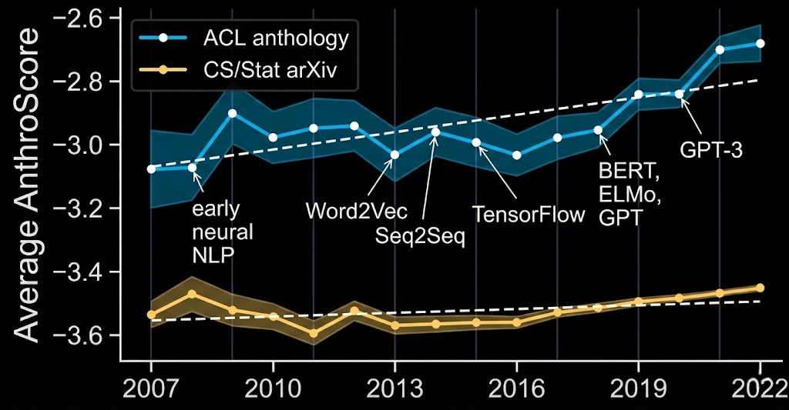
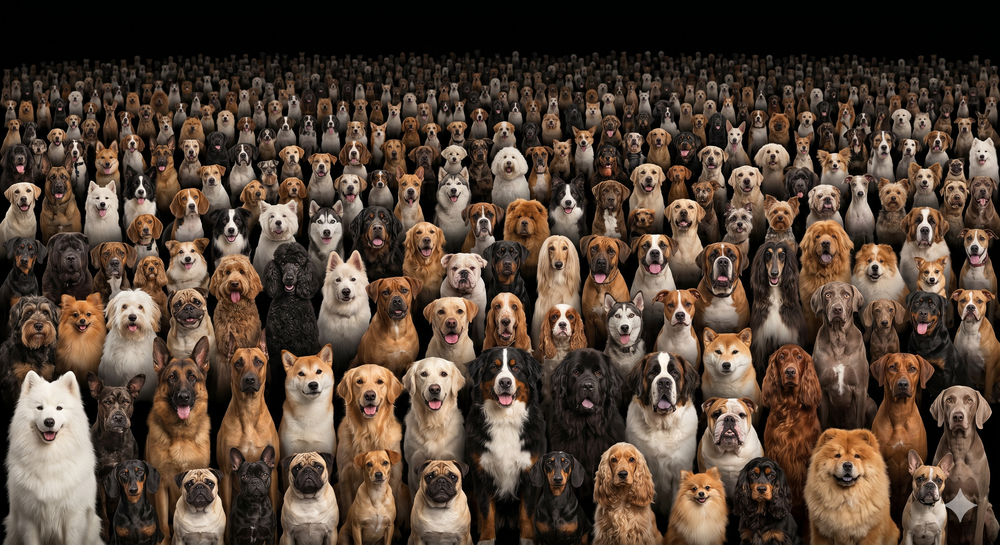
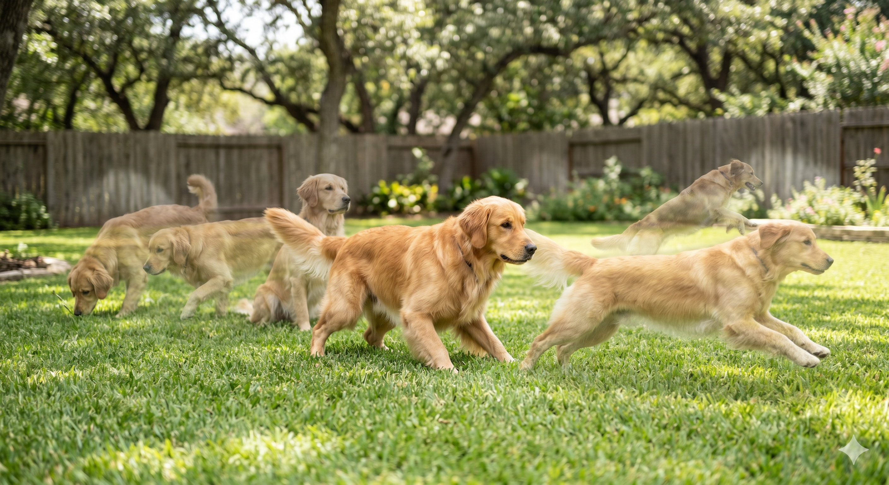
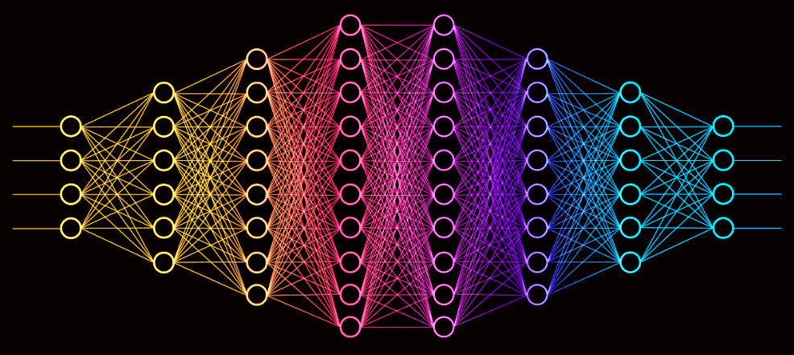
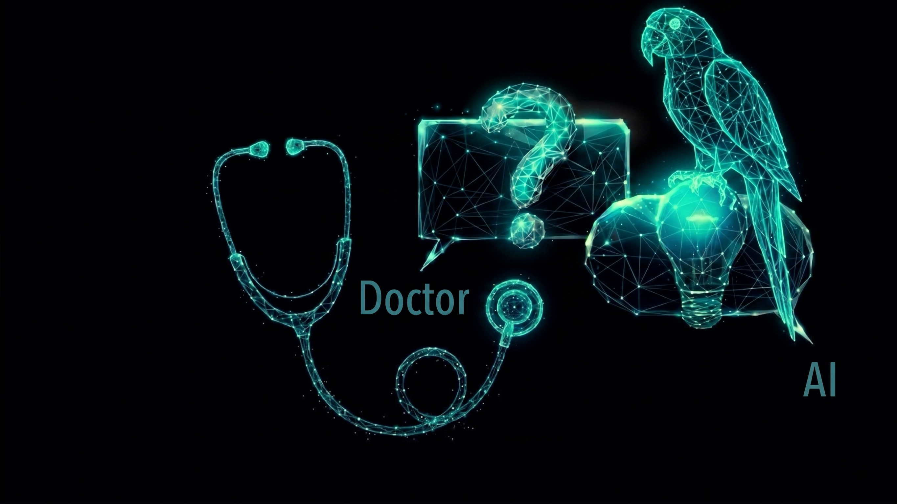
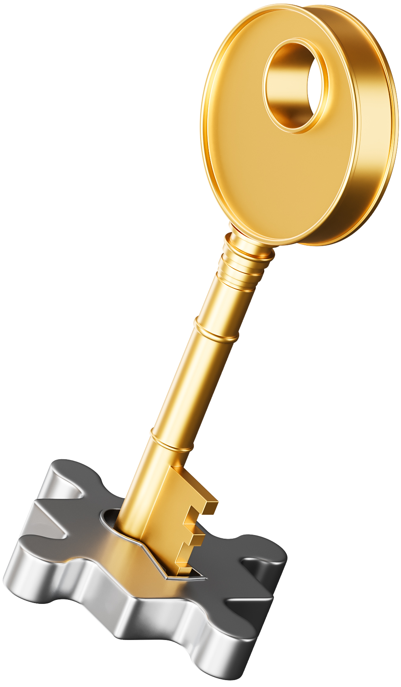
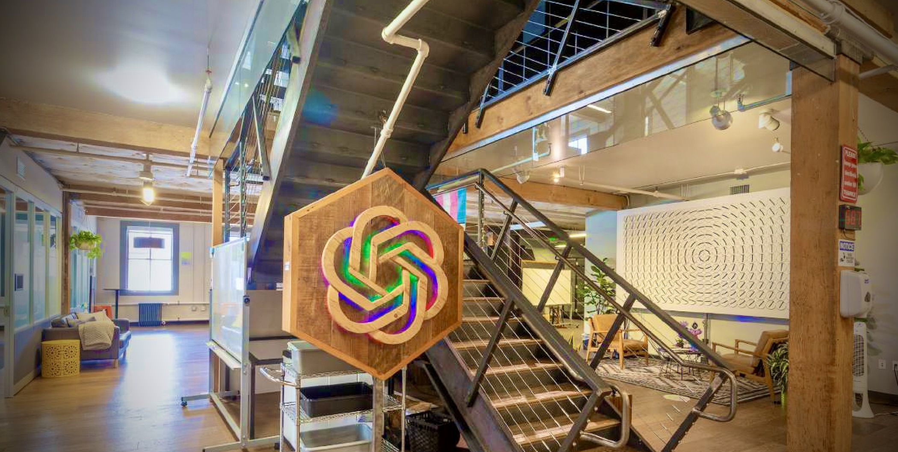

Novel metaphor
Alive
Meaning is still being actively worked out.
- Context-sensitive comparison
- Imaginatively demanding

“Does AI understand?”
Look at the rise of anthropomorphic language through the lens of metaphor. There is a transfer going on — our ways of thinking about biological minds are being creatively extended to artificial minds.
These metaphors illustrate something fundamental about how language evolves.


Creativity precisely comes in where the rules give out.

Metaphorically extending a term to X induces us to see or consider X in a new light (Davidson, Moran)
Don’t look for special metaphorical meanings of words at the level of language; focus on how metaphorical usage channels our attention directed at the world
But Davidson leaves the framing effect as a black box — an unstructured “noticing of similarities.”
When we extend a concept to a new domain, we do not transfer this bowtie structure wholesale. The metaphor invites us to explore which inferential connections hold in the new domain and which do not.
Gentner’s structure-mapping theory
When we hear “the motor complained,” we do not retrieve a stored secondary sense. We construct meaning online: we actively compare source and target and selectively project relational commonalities.
Cornelia Müller (2008): metaphors don't die; they oscillate between states of waking and sleeping. Sleeping metaphors can be reawakened (Goldstein, Arzouan, and Faust 2012).
Neither side recognises the creative metaphorical extension.

Our existing concept of understanding carries implications that do not fit AI—of consciousness or responsibility, for example.
This means that our cognitive vocabulary is simultaneously
encodes assumptions that don’t map onto machines
we need its inferential richness to guide human–AI interaction
People resist calling it “reasoning” because it’s not human reasoning. But I think there is no way we can not call it reasoning.
A conceptual need is not a need of the body but a need of the mind — an instrumental need for a certain way of thinking


Robert Heinlein’s Stranger in a Strange Land describes Martians as capable of achieving an alien mode of deep understanding
The model was never told this method. It was just shown thousands of solved examples.
A selective subset of the concept’s inferential connections. Metaphors open up the bowtie structure of concepts and let us explore which connections hold in the new domain and which do not.
Conceptual needs: our cognitive concepts perform work that we need to see performed in human-AI interactions – for example, the concept of understanding guides how we place our trust.
But our cognitive concepts also carry commitments that don’t map onto machines. This puts us in a bind calling for conceptual adaptation. Our conceptual needs drive and discipline that adaptation.
The case of grokking showed that it can. When a model groks, it ceases to rely on rote memorisation and forms a compact computational circuit encoding a general principle.
But this is a deeply different form of understanding – understanding without consciousness
What looks like a terminological dispute is really a struggle over which inferential connections to endorse — a struggle whose consequences reach into hospitals, courtrooms, and regulatory agencies.
Metaphorical extension is not ornamental. It is a vital mechanism by which a linguistic community reshapes its expressive resources for a world that keeps outrunning them.